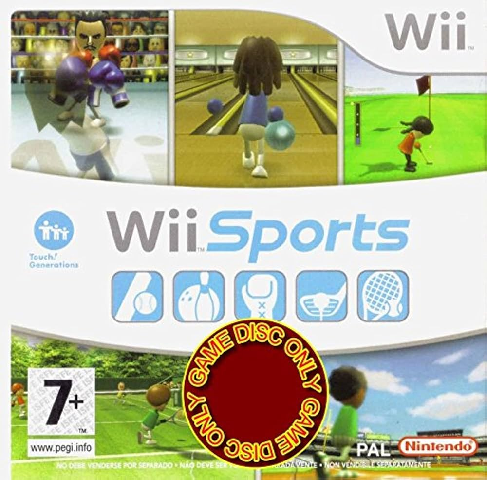
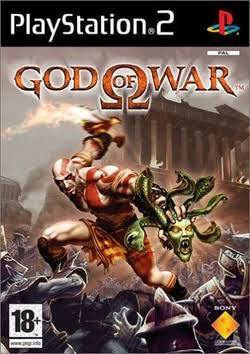

Minecraft es un juego de mundo abierto, y no tiene un fin claramente definido aunque sí que tiene una dimensión llamada a sí misma el fin Esto permite una gran libertad en cuanto a la elección de su forma de jugar. A pesar de ello, el juego posee un sistema que otorga logros por completar ciertas acciones. Los jugadores son libres de desplazarse por su entorno y modificarlo mediante la creación, recolección y transporte de los bloques que componen al juego, los cuales solo pueden ser colocados respetando la rejilla fija del juego. Los jugadores son capaces de crear además las denominadas granjas que son estructuras y mecanismos para conseguir un fin, aprovechándose de ciertas mecánicas del juego

es un videojuego de acción y aventura de mundo abierto desarrollado por Rockstar North y publicado por Rockstar Games. Fue lanzado inicialmente el 17 de septiembre de 2013 para PlayStation 3 y Xbox 360. Posteriormente, se publicó el 18 de noviembre de 2014 para PlayStation 4 y Xbox One, incorporando, un modo de juego con perspectiva en primera persona. Su historia transcurre en el estado ficticio de San Andreas, principalmente en la ciudad de Los Santos y sus alrededores, una recreación satírica del sur de California y de la ciudad de Los Ángeles. fue uno de los videojuegos más costosos de su época. Tras su lanzamiento, obtuvo una gran aclamación por parte de la crítica y un éxito comercial sin precedentes

es un videojuego de lógica desarrollado por EA Mobile y publicado por Electronic Arts para iOS, Android, BlackBerry OS, PlayStation 3, PlayStation Portable y Windows Phone. El juego presentaba una jugabilidad como otros títulos de Tetris, con una nueva banda sonora el juego alcanzó los 100 millones de descargas pagas en 2010 convirtiéndolo en el juego móvil pago más vendido de todos los tiempos y el tercer juego más vendido de todos los tiempos en total La jugabilidad era casi idéntica a la de otros títulos de Tetris, pero con una nueva banda sonora. Los jugadores también tenían la capacidad de crear su propia banda sonora para el juego utilizando la biblioteca de música del dispositivo iPhone o iPod Touch en el que se estaba jugando. El juego ofrecía dos modos de juego denominados modo "Maratón" y modo "Mágico"

es un videojuego de deportes, desarrollado y producido por Nintendo como título de lanzamiento para la videoconsola Wii, parte de la serie Touch! Generations. Fue lanzado en América del Norte junto con la consola el 19 de noviembre de 2006, y fue lanzado en Japón, Australia y Europa del mes siguiente. El juego viene incluido con la compra de la consola en todos los territorios excepto en Japón, haciéndolo el primer juego vendido en conjunto con el lanzamiento de una consola de Nintendo desde Mario's Tennis para Virtual Boy en 1995. El juego es un simulador de cinco deportes, diseñado para demostrar las capacidades inalámbricas y sensoriales del mando de Wii a los nuevos jugadores. Los cinco deportes incluidos son tenis, béisbol, bolos, golf y boxeo. Los jugadores usan el mando de la consola para imitar los movimientos hechos en la vida real en esos deportes, como mover una raqueta de tenis. Las reglas de los juegos están simplificadas para hacerlas más accesibles a los nuevos jugadores. El juego también incluye un modo de entrenamiento que monitoriza el progreso del jugador en los deportes

Mario Kart 8 Deluxe es un videojuego de carreras desarrollado y publicado por Nintendo para la consola Nintendo Switch. Es la undécima entrega de la serie Mario Kart, novena en consolas de Nintendo, y hasta el momento, el videojuego más vendido de la consola, lanzado mundialmente el 28 de abril de 2017 Cuenta con todo lo visto previamente en Mario Kart 8 (pistas, personajes, DLCs, vehículos, etc.) anteriormente se creo en la consola wii u pero luego del fracaso no logro las ventas por lo cual se tuvo la neceisdad de dar de baja los servidores sin embargo llego para la nintendo switvh y fue todo un exito Aunque no incluye nuevas pistas de carreras incluye nuevos personajes y un mejorado modo batalla. tiene varios modos de juegos grand prix, contrareloj, carrera contra, multijugador, modo inalámbrico, modo batalla

es un videojuego de acción y aventuras hack and slash desarrollado por Santa Monica Studio y publicado por Sony Computer Entertainment para la PlayStation 2. Es la primera entrega de la serie God of War y la tercera cronológicamente. Basado libremente en la mitología griega, está ambientado en la antigua Grecia con la venganza como motivo central. El jugador controla al protagonista Kratos, un guerrero espartano que sirve a los dioses del Olimpo. La diosa Atenea le encarga a Kratos que mate a Ares, el dios de la guerra y ex mentor de Kratos que engañó a Kratos para que matara a su esposa e hija. Mientras Ares asedia Atenas por odio a Atenea, Kratos se embarca en una búsqueda para encontrar el único objeto capaz de detener al dios de una vez por todas la Caja de Pandora. vendió más de 4,6 millones de copias en todo el mundo, lo que lo convierte en el decimocuarto juego de PlayStation 2 más vendido de todos los tiempos. Considerado como uno de los mejores juegos de acción y aventuras para la plataforma, ganó varios premios al Juego del año
